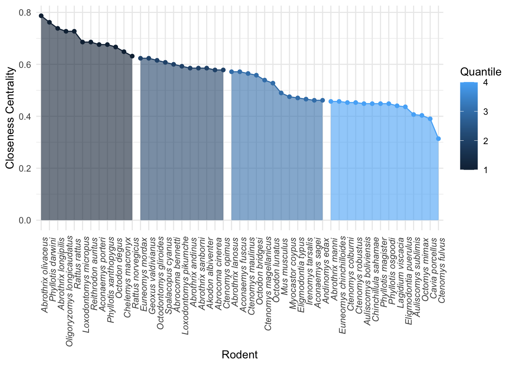
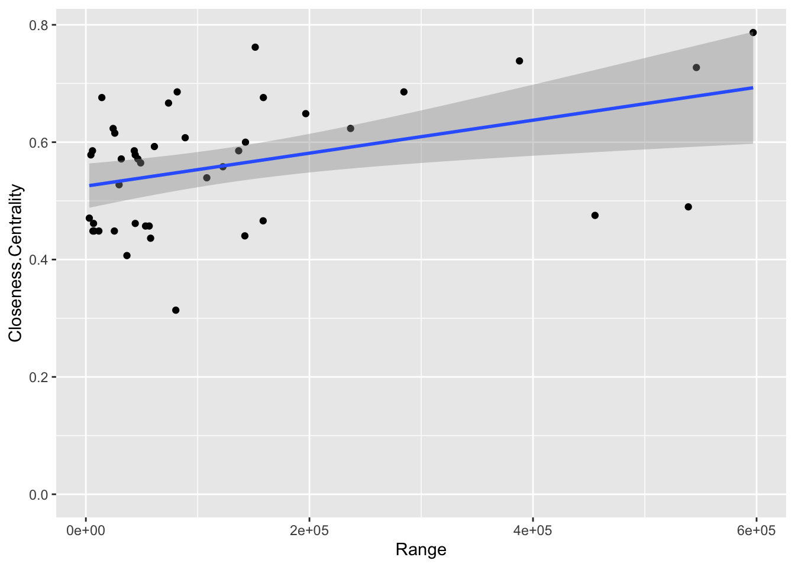
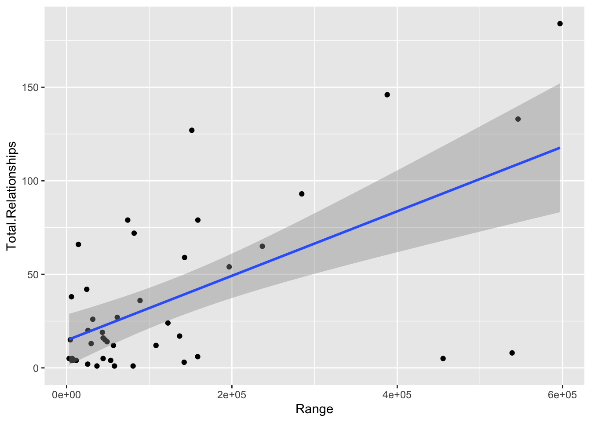
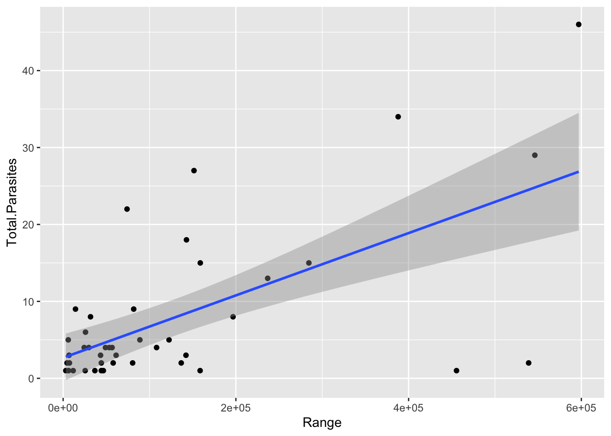
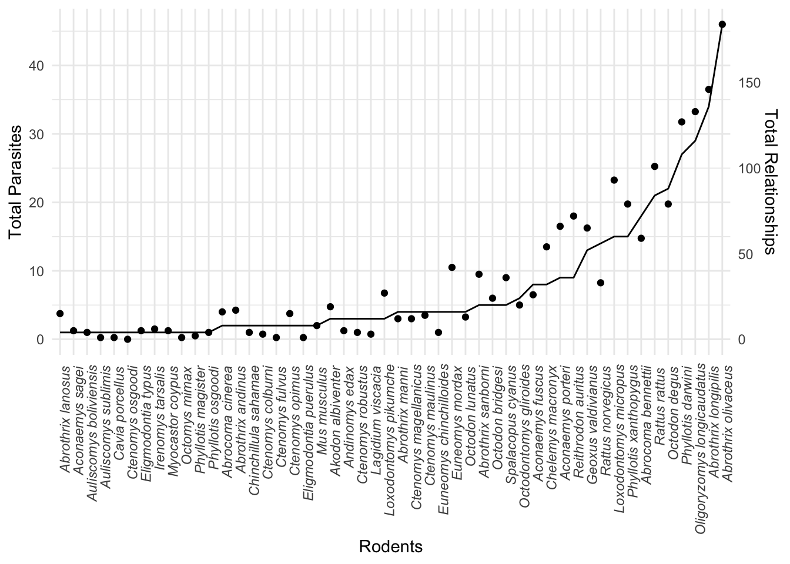
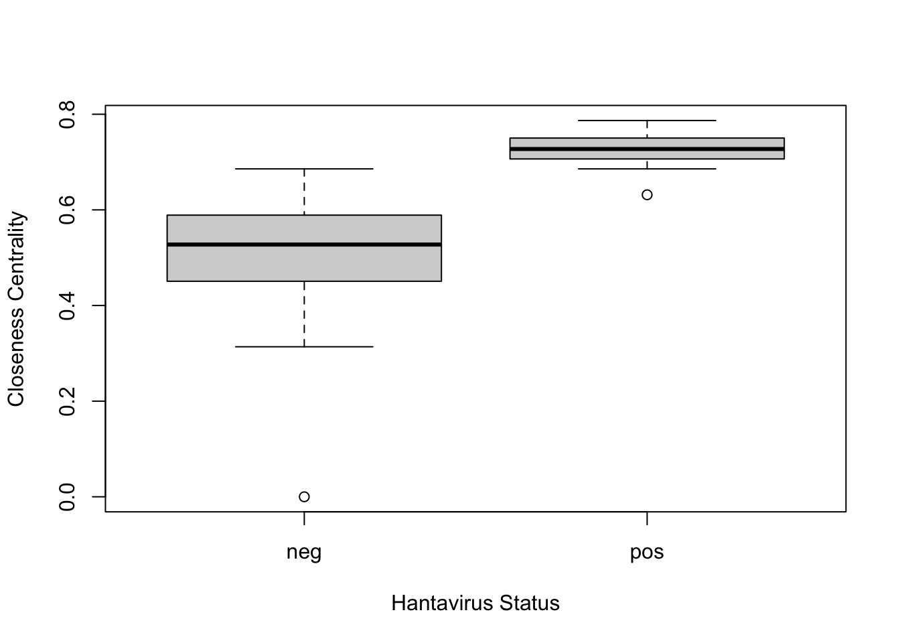

Purpose: Explore how a rodents place in the network based on closeness centrality can be used to explain Hantavirus host status.
Load packages
library(forcats)
library(ggplot2)
library(fmsb)Calculate quantiles for closeness centrality and assign them to each rodent in a new column.
closcen<- read.csv("ClosenessCentrality.csv", header=TRUE) ## From Gephi
closcen<- subset(closcen, closnesscentrality>0) # get rid of rodents without connections
sorted<-closcen[order(closcen$closnesscentrality ),]
quan<-quantile(closcen$closnesscentrality)
genrod<- subset(closcen, closnesscentrality> quan[4])
midrod<- subset(closcen, closnesscentrality<= quan[4] & closnesscentrality> quan[3])
lowrod <- subset(closcen, closnesscentrality<= quan[3] & closnesscentrality> quan[2])
specrod<-subset(closcen, closnesscentrality<= quan[2] & closnesscentrality>= quan[1])
genrod$Quantile<- c(1,1,1,1,1,1,1,1,1,1,1,1)
midrod$Quantile<-c(2,2,2,2,2,2,2,2,2,2,2)
lowrod$Quantile <- c(3,3,3,3,3,3,3,3,3,3,3,3)
specrod$Quantile<- c(4,4,4,4,4,4,4,4,4,4,4,4,4,4)
grod <- genrod[,c("Id", "Quantile", "closnesscentrality")]
mrod<- midrod[,c("Id", "Quantile", "closnesscentrality")]
lrod<- lowrod[,c("Id", "Quantile", "closnesscentrality")]
srod<- specrod[,c("Id", "Quantile", "closnesscentrality")]
netrod<-rbind(grod, mrod, lrod, srod)Plot the closeness centrality quantiles.
ggplot(netrod, aes(x = fct_reorder(Id, closnesscentrality, .desc=TRUE ), y = closnesscentrality, group=Quantile)) +
geom_line(aes(colour= Quantile)) +
geom_area(data=netrod[netrod$Quantile=="1",],mapping=aes(fill=1), alpha=.6, show.legend = F)+
geom_area(data=netrod[netrod$Quantile=="2",],mapping=aes(fill=2), alpha=.6, show.legend = F)+
geom_area(data=netrod[netrod$Quantile=="3",],mapping=aes(fill=3), alpha=.6, show.legend = F)+
geom_area(data=netrod[netrod$Quantile=="4",],mapping=aes(fill= 4), alpha=.6, show.legend = F)+
geom_point(aes(colour=Quantile), show.legend = FALSE)+
theme_minimal()+
theme(axis.text.x=element_text(angle=90, hjust=0.95,vjust=1, face="italic")) + xlab("Rodent") +ylab("Closeness Centrality")
Explore relationships between range size with closeness centrality, total parasites, and total relationships
cc<- read.csv("AllDataConsol.csv", header=TRUE) #file has rodent names, range size, total parasites, total relationships, and closeness centrality
par(mfrow=c(1,3))
closecen<-ggplot(cc, aes(x=Range, y=Closeness.Centrality))+
geom_point()+
stat_smooth(method="glm")
closecen
trela<-ggplot(cc, aes(x=Range, y=Total.Relationships))+
geom_point()+
stat_smooth(method="glm")
trela
tpara<-ggplot(cc, aes(x=Range, y= Total.Parasites))+
geom_point()+
stat_smooth(method="glm")
tpara
cclm<- glm( Range ~ Closeness.Centrality, data=cc)
p_cc<-coef(summary(cclm))[2,4]
tplm<- glm( Range ~Total.Parasites , data=cc)
p_tp<-coef(summary(tplm))[2,4]
trlm<- glm( Range ~ Total.Relationships, data=cc)
p_tr<- coef(summary(trlm))[2,4]Range has a significant relationship with closeness centrality (p= 0.0065876), total relationships (p= 1.5202329^{-5}), and total parasites (p= 5.5458519^{-6}).
Compare total parasites and total relationships per rodent on the same plot
ratio<- median(cc$Total.Relationships)/ median(cc$Total.Parasites)
n<-4
ggplot(cc, aes(x=fct_reorder(Rodent, Total.Parasites)))+
geom_line(aes(y=Total.Parasites, group=F), color = 'black') +
geom_point(aes(y=Total.Relationships/n, group= F))+ theme_minimal() +
theme(axis.text.x=element_text(angle=90, hjust=0.95,vjust=1, face="italic") )+
xlab("Rodents") +
scale_y_continuous(
name = "Total Parasites",
sec.axis = sec_axis( trans=~.*4, name="Total Relationships")
) 
On average, an ectoparasite connects a rodent to 4.2857143 other rodents. In the plot above, when the dot (total relationships) falls above the line (total parasites) for a rodent, it means that rodents parasites connect it to more rodents than the average. When it falls below the line, the parasites connect it to less rodents on average.
Next, use a binomial logistic regression to test how well closeness centrality predicts hantavirus hosts
cchanta<- read.csv("ClosenessCentralityHanta.csv", header=T) # file with CC and hantavirus status 0/1 for neg/pos
boxplot(closnesscentrality~Hanta, data=cchanta, xlab = "Hantavirus Status", ylab= "Closeness Centrality")
Based on the boxplot, it seems as though known Hantavirus hosts have a higher closeness centrality. Now we will use a binomial logistic regression model to test this.
log<-glm(X ~ closnesscentrality, family= 'binomial', data= cchanta ) #X is a column with 0 and 1 for negative and positive hantavirus status
R2<- NagelkerkeR2(log)
p_hanta<- coef(summary(log))[2,4]In the binomial logistic regression model, closeness centrality explains 78% of the variance in Hantavirus status among rodents (p= 0.0168109, R2= 0.7778293)